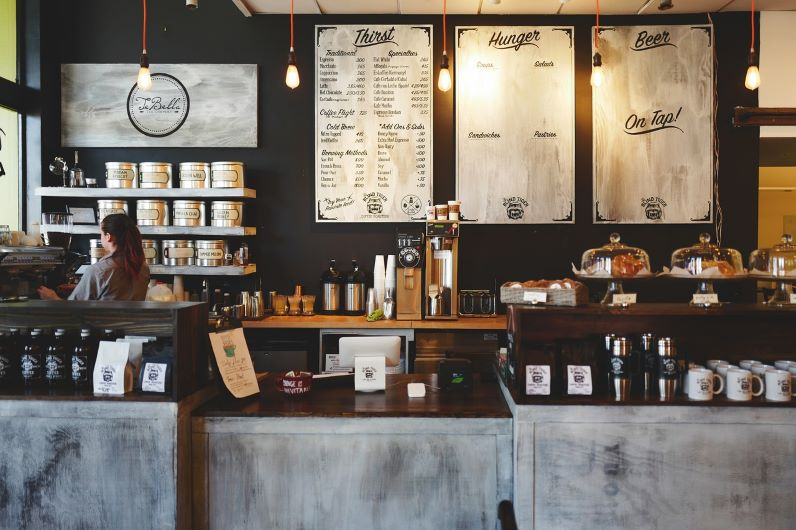

WELCOME TO SALT & PEPPER
Salt & Pepper's values are centred on sourcing the freshest produce
from local suppliers, supporting fellow small businesses and making a
conscious effort toward sustainability, which includes composting all
our food waste, coffee grinds and compostable packaging.
We believe the purpose of hospitality is to create the perfect moment
for each individual customer and we aim to go above and beyond with
each visit. Inspired by many cultures and traditions, each dish is
being served from our heart.
We pride ourselves in our ability to cater to any dietary requirement
or preference without compromising on taste or creativity.
Contact
Phone-012 3453 563
Email: manager@salt&pepper.co.nz
Facebook: salt&peppercafe
Instagram: @salt&peppercafe
Location
3/165 Madras Street
Central Christchurch
Newzealand
Opening Hours
Monday-Friday: 7:00am-3:30
Saturday-Sunday: 8:00am-3:30pm
Kitchen closes at 2:30pm every day